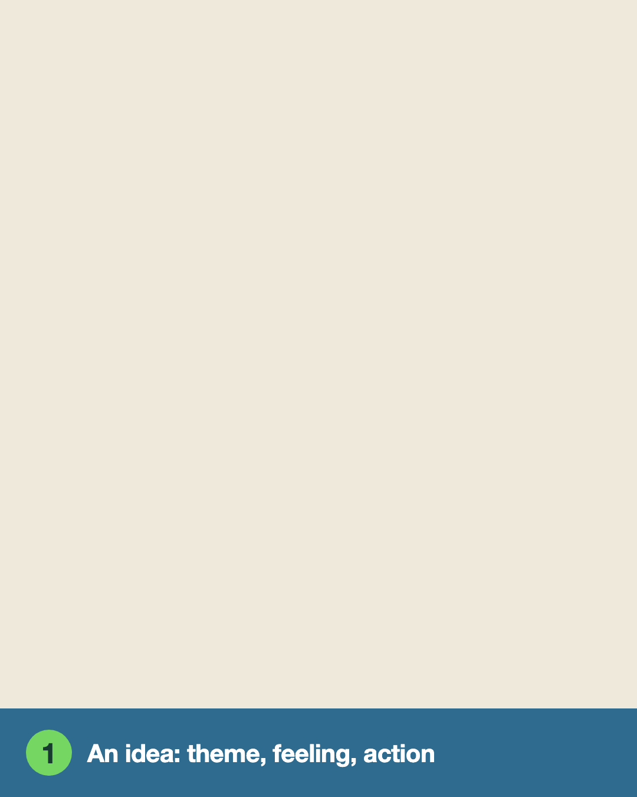

Я учусь геймдизайну, собирая игры инструментом, который сделал сам. Он превращает рецепт из игровых
паттернов в маленький играбельный прототип. Я играю, говорю ИИ-ассистенту игры, что почувствовал,
и он собирает следующую версию.
Копия от 15 октября 2026: две игры и их настоящие чаты. Сборка отключена.
Паттерны623 из каталога Бьорка и Холопайнена, вместе со связями самого каталога: какой паттерн может вызвать какой. Time Pressure может вызвать Tension.Patterns in Game Design, 2005, и его вики
Слоикаждый паттерн лежит на одном слое MDA: механика — правила, которые кладут руками, динамика — то, что происходит в игре, эстетика — то, что чувствует игрокХанике, Леблан, Зубек, 2004
Рецепттема из геймджема Ludum Dare, чувство-цель, от 3 до 9 паттернов, одно действие, которое игрок повторяеткнопка-кубик собирает случайный по связям
СборщикИИ-агент (сейчас Claude Sonnet), запущенный из командной строки, пишет одну HTML-страницу: серую игру на холсте 700×500 и 3–7 ручек для её главных чиселот 30 секунд до 4 минут на версию
Ассистенту каждой игры свой чат; он читает рецепт, записки и весь разговор и по просьбе собирает следующую версиюстарые версии не перезаписываются

Один круг на другом прототипе, плотине: v1, моя записка, добавлен один паттерн, v2.
Откуда взялся первый прототип
Перед сборкой я разобрал Beholder письменно: какие механики несут историю и что пропадает, если
одну из них убрать. В рецепт ушли три факта. У домовладельца свой ключ. Донос проверяют только по
форме. Камеры покупают за очки авторитета.
Прототип я сужу по одному: узнаётся ли в нём Beholder.
Papers, Please и Beholder, разобранные по слоям: как механика связана со смыслом и какие решения
разработчики принимали по ходу. Первый прототип собран из второго разбора.